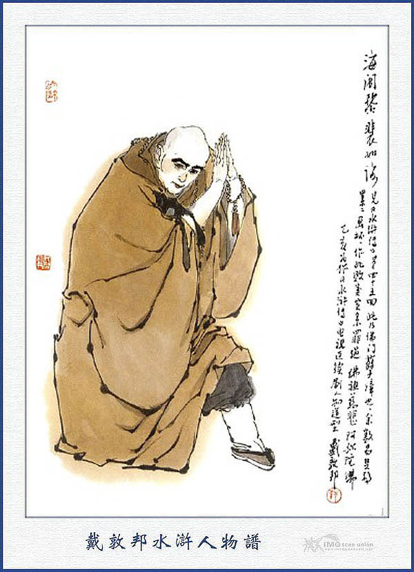
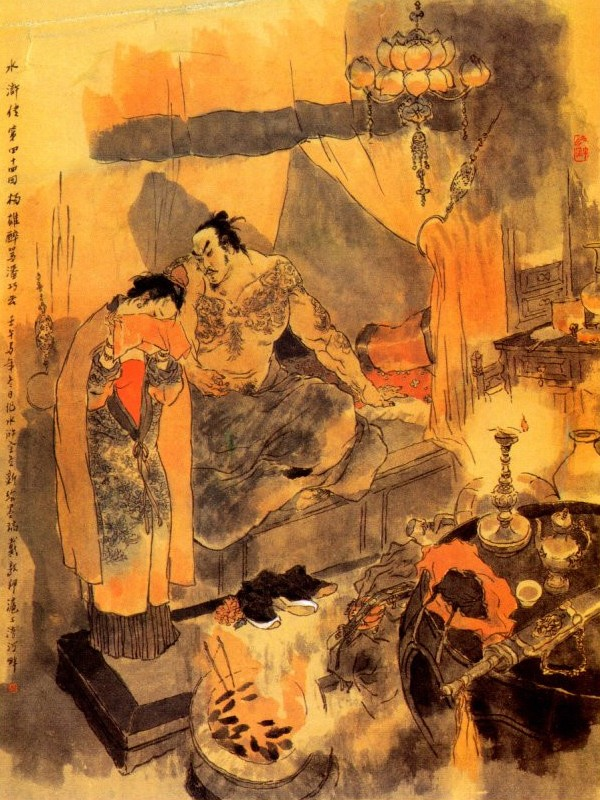
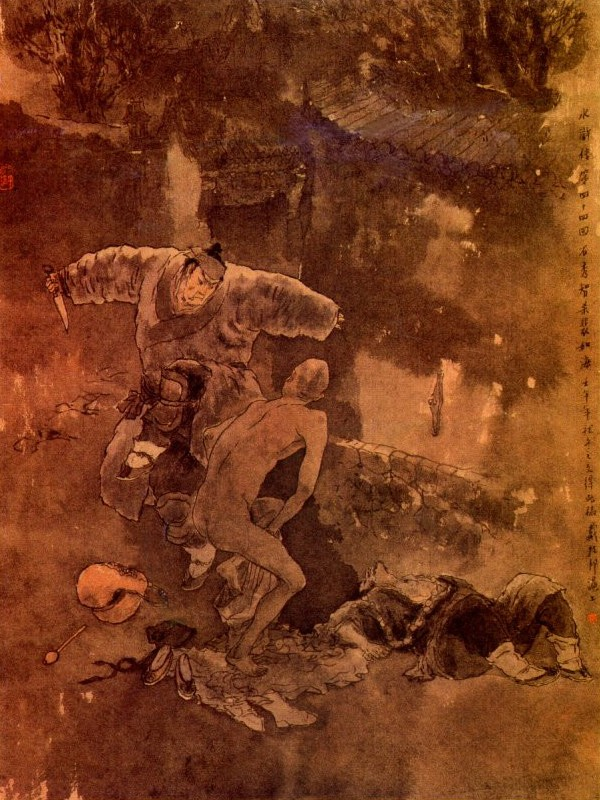

Bấy giờ Phan Công bảo với Thạch Tú rằng:
- Mấy hôm thúc thúc đi vắng nay về thấy đồ đạc hàng họ thu dọn cả vào, nên thúc thúc có lòng nghi ngờ mà muốn bỏ đi chăng? Thúc thúc không nên nghĩ thế, dẫu không mở cửa hàng mà nuôi thúc thúc ở trong nhà cũng được, chứ có điều chi mà ngại? Nhưng không phải, chẳng giấu gì thúc thúc. Con cháu nhà tôi, trước đã lấy Vương Áp Ty đã mất, đến nay đã trọn hai năm, nhân gọi là làm chút lễ mọn, để trả nghĩa chồng xưa cho cháu, nên mấy hôm nay phải xếp dọn nghỉ hàng để mua sắm các đồ lễ vật, chứ có phải có tình ý gì khác đâu? Đến ngày mai đây, đón các sư về làm lễ, thế nào cũng phải nhờ đến thúc thúc trông coi tiếp đãi giúp cho, xin thúc thúc vui lòng mà tin tôi mới được.
Thạch Tú nói:
- Nếu quả vậy thì tôi xin lưu lại ở đây, để giúp đỡ trượng nhân, không dám phàn nàn chi cả.
Phan Công lại nói:
- Từ nay trở đi, xin thúc thúc chớ chấp nê điều gì, trước sau bao giờ chúng tôi cũng thế mà thôi.
Nói đoạn liền bảo Thạch Tú cùng ngồi ăn cơm uống rượu. Sáng sớm hôm sau, có mấy người thầy cúng mang lễ vật đến, thiết lập đàn tràng, sắp sửa các đồ đèn nên hoa hương, trống chuông cảnh mõ và bày dọn cỗ chay để cúng.
Bấy giờ Dương Hùng ở phủ đi về, bảo Thạch Tú rằng:
- Hiền đệ ơi! Hôm nay tôi phải đến phiên coi ngục, không thể nào mà trở về nhà được, vậy các công việc ở nhà, xin hiền đệ trông nom giúp đỡ cho.
Thạch Tú vui vẻ đáp rằng:
- Xin Ca Ca cứ đi việc quan, các công việc ở nhà để giao cho tiểu đệ.
Nói đoạn Dương Hùng từ biệt mà đi vào phủ. Đương khi Dương Hùng đi rồi, một mình tgt đứng đợi đón tiếp ở nhà ngoài, chợt thấy có một vị sư trẻ tuổi đi vào rồi thấy một người thầy cúng gánh đôi cái quả theo sau, Thạch Tú liền vái chào vị sư, mời vào ở đó rồi bảo cho Phan Công biết.
Phan Công nghe nói, vội vàng chạy ra để đón tiếp. Vị sư kia thấy Phan Công ra tới nơi, liền đứng dậy vái chào mà rằng:
- Đã lâu nay không thấy can gia đến vãn cảnh ngoài chùa.
Phan Công cười đáp rằng:
- Lão tôi vì mở thêm cửa hàng, nên bạn không đi đâu được.
- Hôm nay là ngày giỗ hết Áp Ty, chúng tôi cũng không có gì đem vào dâng biếu, vạy gọi là có chút lễ mọn, xin cụ chấp nhận lấy cho.
- Chết nỗi! Sao sư phụ lại xử phiền như thế?
Nói xong bảo Thạch Tú bưng lễ vật vào trong nhà rồi gọi người pha nước ra mời nhà sư uống.
Bấy giờ vợ Dương Hùng ở trên gác đi xuống, hỏi Thạch Tú rằng:
- Ai đưa lễ vật đến đó, thúc thúc?
Thạch Tú ngẩng nom chị chàng kia cũng ăn mặc loàng xoàng, không ra dáng một ngày đại hiếu, liền đáp rằng:
- Có một vị sư gọi lão trượng nhà ta là can gia đưa đến đây.
Chị chàng kia nghe nói cười mà rằng:
- Chắc lại sư huynh Bùi Như Hải đó hẳn? Ông ấy là một vị rất trung thành xưa nay. Nguyên trước là con ông chủ hiệu họ Bùi, sau mới xuất gia ở chùa Báo Ân đó. Sư phụ ông ta vốn là người môn đồ nhà này, cho nên mới bái phụ thân tôi làm can gia đấy. Pháp danh ông ta là Hải Công, hơn tôi hai tuổi, nên vẫn gọi sư huynh. Ông ta tụng kinh niệm Phật rất tốt tiếng rồi chiều nay thúc thúc nghe mà xem.

BÙI NHƯ HẢI
Thạch Tú nghe nói, trong bụng có điều ngờ ngợ, song không dám nói ra cũng phải ứng đáp qua loa cho xong chuyện.
Đoạn rồi chị chàng kia, đi ra nhà ngoài để chào vị sư, Thạch Tú liền khoanh tay lững thững bước ra theo, nấp ở trong mành để xem. Khi chị chàng ra tới nhà ngoài thì hòa thượng kia vội vàng đứng dậy chạy đến trước mặt mà chấp tay vái chào rất là lễ phép.
Chị chàng cũng cúi chào lại rồi nói rằng:
- Sao sư huynh lại còn phiền. em cho lễ vật như thế?
Vị sư đáp:
- Dám thưa hiền muội, có chi mà dám gọi là phiền?
- Đã đành vậy, nhưng chùa chiều có gì mà phải như thế, cho phí tổn vô ích.
- Ngoài chùa tôi mới sửa xong Thủy Lục Đường, muốn mời hiền muội cùng ra vãn cảnh một hôm, chi sợ Tiết Cấp không bằng lòng.
- Có lẽ đâu Tiết Cấp nhà tôi khi nào lại nghĩ đến những việc đó. Vả trước đây khi lão nương tôi mất, tôi có hứa ra dâng lễ huyết bồn ngoài chùa, vậy nay mai thể nào tôi cũng phải ra chùa, để nhờ sư huynh dâng lễ giúp cho.
- Vâng, cái đó xin sẵn lòng, hiền muội sai bảo việc chi. Như Hải này cũng xin hết sức giúp ngay.
Chị đàn bà lại nói:
- Xin sư huynh niệm nhiều kinh cho mẫu thân tôi thì hay lắm!
Nói dứt lời thì thị nữ bưng trà ra. Chị đàn bà lấy khăn tay lau lại miệng chén cẩn thận rồi hai tay bưng chén nước đưa lại để mời nhà sư, nhà sư giơ tay tiếp lấy chén trà, hai con mắt trừng trừng nhìn vào mặt chị chàng kia. Chị chàng cũng cười tít đi mà đưa mắt liếc trả lại nhà sư rất là khả ố.
Thạch Tú đứng trong rèm thấy vậy, trong bụng lẩm bẩm bảo một mình rằng: Xưa nay chị chàng này vẫn hay cợt nhả cười đùa, ta vẫn tưởng là chỗ chị em thân nên mới xử sự nhả như thế. Ai ngờ người đàn bà này cũng là một bọn bất lương đây. Được, nếu gặp vào tay Thạch Tú này thì tất phải vì Dương Hùng mà làm cho vỡ lẽ mới được.
Chàng nghĩ như vậy, liền vén rèm sồng sộc đi ra, Chú sư hổ mang thấy Thạch Tú bước ra, bèn đặt chén trà xuống rồi nói rằng:
- Xin mời Đại Lang ngồi chơi.
Chị chàng kia nhanh mồm nói luôn rằng:
- Thúc thúc đây là anh em kết nghĩa với Tiết Cấp nhà tôi đó.
Nhà sư hỏi ngay rằng:
- Đại Lang quý quan ở đâu? Đại danh quý tính là gì?
Thạch Tú nói:
- Tôi ấy à? Tôi họ Thạch tên Tú, người phủ Kim Lăng bình sinh chi hay ra sức giúp người, nên họ thường gọi là Tiểu Mạnh Tam Lang. Tôi là một anh lỗ mãng, nhỡ có điều gì đường đột, xin Hòa Thượng đừng chấp.
Nhà sư vội vàng đáp rằng:
- Không dám, có điều gì mà Đại Lang dạy thế? Tôi xin phép đi đón chư tăng để cúng bây giờ đây?
Nói đoạn hất hả chạy đi ra cửa.
Chị chàng kia dặn với rằng:
- Sư huynh đi mau rồi về đây cho.
Sư ta vội vàng cắm cổ đi, không dám ngoẳng cồ lại mà nói nửa lời nữa. Chị chàng thấy nhà sư đi rồi, liền quay gót trở vào nhà trong. Bấy giờ Thạch Tú đứng ở trước cửa thở dài một tiếng rồi cúi đầu xuống mà nghĩ ngợ một mình, ra chiều khó chịu vẫn vơ. Hồi lâu bọn sãi chùa đến, sắp sửa lễ vật rồi lên đèn hương ở đạo tràng. Được một lát thì nhà sư hổ mang kai dẫn chư tăng đến làm lễ. Phan Công nhờ Thạch Tú tiếp đãi nước nôi một lúc rồi chư tăng cùng vào đạo tràng mà lên hiệu thỉnh Phật.
Bấy giờ sư hổ mang kia, cùng một nhà sư trai trẻ nữa, khua chiêng gõ mõ sái tĩnh đàn tràng, dâng sớ cúng Phật rồi đọc kinh siêu độ vong linh. Khi đó chị chàng ra quỳ ở trước pháp đàn tay nâng lư hương để dâng lễ Phật. Nhà sư kia thì hết sức cổ vũ mà khua tiêu gõ cảnh để đọc các bài châm ngôn, rất là êm ái dễ nghe.
Được một lúc, các sư đi vào nhà trong thụ trai. Sư hổ mang ta lẻn lại đi sau, thỉnh thoảng liếc mắt chị chàng kia rồi đôi bên cười cợt tống tình, rất nên chiều đắc ý. Thạch Tú trông thấy bao nhiêu như vậy thì trong lòng lại càng tức tối khó chịu, song không dám nói ra.
Khi các sư ra đến nhà ngoài, cùng ngồi uống mấy chén rượu suông rồi người nhà dọn cỗ chay ra, Phan Công mời qua một lượt rồi trong mình mệt mỏi tự đi vào phòng nghỉ trước.
Hồi lâu các sư thụ trai xong rồi, lại bắt đầu ra đạo tràng để cúng. Bấy giờ Thạch Tú tức bực trong lòng, bèn nói dối là đau bụng rồi cũng đi nằm một chỗ. Các sư ra đến pháp đan, noi chuông rung trống đọc kinh Thiên Vương làm lễ Triệu Vong rồi cùng nhau tham lễ Tam Bảo. Mãi đến đầu trống canh ba, các sư đã nhọc nhằn khẳng tẳng, duy còn sư hổ mang ta vẫn dùng hết tinh thần để đọc kinh niệm Phật mà kêu lòng ân ái của ả voi giày.
Ả kia đương đứng ở trong mành, càng nghe thấy vậy thì lửa dục càng thêm rung động, liền sai thì nữ mời nhà sư vào ở trước rèm để nói chuyện. Khi ấy nhà sư vừa đọc kinh, vừa chạy đến trước rèm rồi chị chàng đứng trong rèm nắm lấy áo nhà sư mà nói rằng:
- Ngày mai sư huynh đến lấy tiền công đức, xin sư huynh nhắc đến việc huyết bồn cho.
Nhà sư nói rằng:
- Được. Anh đây nhớ lắm. Mong hoàn tâm nguyện thì hoàn ngay chứ sao?
Nói xong lại bảo chị ả kia rằng:
- Thúc thúc nào ở đâu? Người ấy trông ghê lắm đây.
Chị chàng lắc đầu nói:
- Sợ gì hắn, hắn có phải là anh em ruột thịt gì mà sợ!
Nhà sư gật gù khen phải mà rằng:
- Nếu vậy mới có thể yên tâm được.
Nhà sư vừa nói vừa đưa tay ra bấm tay chị chàng kia một cái rồi cười mà đi ra cúng đàn.
Khi đó Thạch Tú nằm ở trong nhà trong thấy rõ ràng như vậy, trong lòng lại càng băn khoăn khó chịu vô cùng. Vào khoảng canh năm cúng lễ đã xong, hóa đốt vàng mã rồi các sư làm lễ tạ đàn mà trở về chùa. Chị chàng kia cũng lên gác đi nghỉ.
Bấy giờ Thạch Tú tức giận nghĩ thầm trong bụng:
- Ca Ca ta là một người hào kiệt, gặp phải con vợ như thế, thực là mất cả thể diện chứ không chơi.
Chàng nghĩ vậy, đành phải nên lòng mà đi vào phòng ngủ. Sáng hôm sau Dương Hùng về nhà, ăn uống cơm nước xong xuôi, lại lẳng lặng đi vào trong phủ, không hề ai nói việc chi. Khi Dương Hùng đi rồi, lại thấy nhà sư hổ mang kia, đã thay mặc bộ quần áo nhà chùa, rất chỉnh đốn mà đến nhà Phan Công.
Chị đàn bà nghe nói nhà sư đến, lại vội vàng ở trên gác đi xuống rồi đón mời nhà sư vào xơi nước.
Chị chàng nói với nhà sư rằng:
- Cái qua thực là phiền huynh quá, tiền công đức cũng chưa đưa hầu người.
Nhà sư vội đáp rằng:
- Cái đó cần gì. Duy hôm qua có nói về việc lễ huyết bổn, vậy xin hỏi hiền muội, nếu định làm lễ ngay thì trong chùa tôi hiện đương tụng kinh chỉ phải viết thêm một lá sớ nữa để dâng là đủ.
Chị chàng nói:
- Nếu vậy thì hay lắm, để tôi xin mời phụ thân tôi ra nói chuyện.
Nói đoạn liền sai thị nữ mời Phan Công đến, Phan Công tạ ơn nhà sư mà nói rằng:
- Đêm qua tôi mệt quá, không trông nom được chu tất, sau thúc thúc lại bị đau nghỉ, thành ra không có ai tiếp đãi, xin nhà sư bỏ lỗi đi cho.
Nhà sư đáp:
- Can gia dạy quá lời, có điều chi mà chúng tôi dám trách.
Chị chàng khốn nạn nói với Phan Công rằng:
- Con định dâng lễ huyết bồn cho mẫu thân, nhân thấy sự huynh nói ngoài chùa ngày mai cũng làm lễ, vậy bất nhược cha làm phụ ngay vào đấy thì tiện hơn. Nay để sư huynh về niệm Phật rồi sáng mai hai cha con ta cùng ra làm lễ một thể.
Phan Công nói:
- Phải lắm, song chỉ sợ ngày mai không có ai trông nom nhà cửa cho.
- Việc đó đã có thúc thúc trông nom ở nhà, ngại gì.
- Phải con đã hứa đi như vậy thì sáng mai thế nào cũng phải đi mới được.
Đoạn rồi chị chàng lấy tiền công quả đưa cho nhà sư mà nói rằng:
- Chúng tôi gọi là có chút lòng thành, xin sư huynh nhận lấy cho. Sáng mai chúng tôi sẽ xin đến chùa thụ lộc.
Nhà sư vâng lời, nhận lấy tiền rồi nói với chị chàng kia rằng:
- Đa tạ tấm lòng bố thí, tôi xin đem về để biếu chư tăng. Sáng mai thể nào cũng mời can gia cùng hiền muội ra chùa chứng minh công đức.
Nói xong vái chào ra về. Chị chàng kia cũng đưa chân ra đến cửa rồi mới trở vào. Bấy giờ Thạch Tú lại sửa soạn hàng họ rồi giết lợn ra để bán hàng. Chiều hôm ấy Dương Hùng về tới nhà, khi cơm nước xong rồi, chị chàng kia xui Phan Công nói chuyện đi lễ chùa cho Dương Hùng biết.
Phan Công bèn đem chuyện bảo với Dương Hùng mà nói rằng:
- Sáng mai hai chúng tôi phải đi ra chùa Báo Ân làm lễ, còn công việc ở nhà nhờ thúc thúc Thạch Tú trông nom hộ.
Dương Hùng cũng ưng lời mà đáp rằng:
- Hiền thê đã hứa làm lễ thì xin trượng nhân cứ cho đi, có điều chi mà ngại?
Sáng hôm sau Dương Hùng dậy sớm vào làm việc quan trọng phủ, Thạch Tú thì dậy sớm để dọn hàng chị chàng kia cũng dậy sớm để chải đầu, bít chân, rửa mặt mũi, sửa xiêm áo rồi giục con đòi làm cơm sớm để ăn; Phan Công cũng dậy sớm đi mua các đổ vàng hương lễ vật và đi thuê một cỗ kiệu để đợi ở đó. Bấy giờ Thạch Tú còn bận bán hàng cũng không kịp hỏi han đến các công việc sửa sang ở trong.
Khi cơm nước xong, thị nữ sắp đủ các lễ vật rồi vào khoảng gần trưa, Phan Công thay xiêm áo chỉnh tề mà nói với Thạch Tú rằng:
- Tôi bận việc phải đi chùa với cháu; xin thúc thúc ở nhà trông nom giúp cho, một lát chúng tôi xin về.
Thạch Tú đã hơi ngầm hiểu trong bụng, liền cười mà đáp rằng:
- Xin trượng nhân cứ xuống coi cho tẩu tẩu đi lễ, còn công việc ở nhà tôi xin cáng đáng.
Đoạn rồi chị chàng kia lên kiệu, Phan Công cùng bọn thị nữ đi theo kiệu mà cùng tới chùa Báo Ân. Bấy giờ sư hổ mang ta đứng đón ở ngoài cổng chùa, khi thấy kiệu đi đến, trong bụng hớn hở vui mừng, chạy ra vái cháo rất cung kính.
Phan Công đáp lễ mà rằng:
- Thế này thực là phiền hòa thượng lắm.
Chị chàng kia ở trên kiệu bước xuống, vái chào nhà sư mà rằng:
- Chúng tôi đến đây phiền sư huynh đón tiếp, biết lấy gì mà đền ơn cho được?
Sư ta cung kính mà rằng:
- Không dám, có điều chi mà phiền? Tiều tăng này đã cùng với chúng tăng tụng kinh ở Thủy Lục Đường tử đầu trống canh năm tới giờ, chỉ còn đợi hiền muội đến chứng minh mà thôi.
Nói đoạn dẫn Phan Công cùng chị chàng kia lên Thủy Lục Đường, khi tới nơi, đã thấy lễ vật bày biện nghiêm trang, đèn nến huy hoàng, khói hương nghi ngút, có mười mấy vị sư đương ngồi đọc kinh ở đó.
Chị ả kia cúi chào cá vị sư rồi vào lễ Tam Bảo, sư hổ mang ta lại quỳ xuống trước đàn tụng kinh sám hối làm lễ hóa vàng mà cùng thu trại. Bấy giờ chư tăng dẫn đồ đệ đi thụ trại một nơi, còn sư hổ mang kia thì mời Phan Công cùng chị chàng ta đến một tăng phòng rất sâu, đã đặt bày chỉnh đốn rồi gọi đồ đệ pha nước đem lên. Được một lát thấy hai tên đồ đệ bưng một cái khay đỏ, đặt mấy cái chén trắng, pha một thứ trà thực ngon, đem lên để mời. Khi uống nước xong, nhà sư lại dẫn vào gian gác nho nhỏ, trong bày đồ đạc rất nhã, trên treo một bức thi hạo của danh nhân, giữa kê một cái án con để lò hương nghi ngút, mời Phan Công cùng chị ả ngồi một bên và nhà sư ngồi vào một bên để tiếp. Chị chàng kia nói:
- Sư huynh ở đây thưc là vắng vẻ thư nhàn, rõ cảnh tượng một nhà tu hành lắm.
Sư ta đáp lại rằng:
- Xin hiền muội chớ cười ở đây sao ví được với nhà đằng ấy.
Phan Công nói:
- Chúng tôi đến đây, quấy quả hòa thượng mất cả ngày, bây giờ xin cáo về thôi.
Nhà sư có ý giữ lại mà nói rằng:
- Mấy khi can gia đã đến chơi, xin coi đây như một nhà vậy. Vả chăng hôm nay hiền muội cũng đã đưa tiền để làm lễ, xin can gia ngồi chơi xơi tạm lưng cơm chay đã. Sư đệ cho dọn cơm lên đây.
Nói đoạn thấy đồ đệ bưng ra hai mâm, toàn là quả ngon hoa lạ, cùng các thức ăn chay kỳ dị bày trên mặt bàn.
Chị chàng thấy vậy nói rằng:
- Sư huynh còn cho ăn uống thế này, thực là phiền quá?
Sư ta cười mà đáp rằng:
- Cũng gọi là có lưng cơm nhà chùa, lấy gì làm phiền phí, xin can gia hiền muội chứng giám cho.
Nói đoạn gọi đồ đệ rót rượu rồi hai tay nâng chén đưa mời Phan Công mà nói rằng:
- Không mấy khi can gia đến đây, mời ngồi xơi chén rượu cho vui.
Phan Công cất chén rượu uống một hơi rồi khen rằng:
- Rượu ngon lắm.
Nhà sư nói:
- Bữa trước có một ông thí chủ bảo nấu rượu theo cách rất ngon, ngày mai đem mấy bình đến, để biếu Tiết Cấp xơi.
Nói xong quay ra bảo chị chàng kia rằng:
- Nhà chùa không có gì trả ơn, xin mời hiền muội xơi chén rượu suông vậy.
Đoạn rồi sai rót rượu mời chị chàng và mời cả đám thị nữ cùng uống.
Chị chàng uống một lượt rồi nói:
- Xin thôi, tôi không uống được rượu nữa.
Sư hổ man lại khéo mời rằng:
- Mấy khi nương tử quá chân đến đây xin mời thêm chén nữa.
Phan Công bảo gọi đám phu kiệu vào, cho mỗi người một chén rượu.
Nhà sư vội đỡ lời rằng:
- Xin can gia cứ xơi rượu, đám phu kiệu tiểu tăng đã cho người mời ăn uống ở ngoài kia rồi.
Nguyên sư hổ mang này có ý với chị chàng kia, nên có tìm thứ rượu rất ngon để mời Phan Công uống. Phan Công uống được mấy chén thì say ngã ra đó, sư ta liền sai đồ đệ vực lên gian phòng một bên để nghỉ rồi nói với chị chàng rằng:
- Xin nương tử xơi một chén nữa cho vui.
Chị chàng kia vốn đã sẵn có tình tứ trước, lại nhân trong người váng vất hơi men, liền ra bộ mờ mờ mịt mịt, cười nói mà rằng:
- Sư huynh cứ bắt em uống rượu làm gì thế?
Sư ta sẽ trả lời:
- Đó là tôi kính ái đến nương tử đấy.
- Thôi, rượu không uống được nữa đâu?
- Vậy xin mời nương tử đến phòng tiểu tăng mà xem răng Phật.
- Vâng, tôi đương muốn đi xem qua một lát.
Sư hổ mang liền dẫn chị chàng đến một gian đầu là nơi phòng ngủ, bày biện rất là trang nhã dễ coi. Chị chàng thấy vậy đã hớn hở vui mừng, liền nói:
- Ngọa phòng ở chỗ này, thực là sạch sẽ dễ chịu.
Sư hổ mang cười mà đáp rằng:
- Ở đây chỉ thiếu một nương tử mà thôi.
Chị chàng cũng cười toét mồm ra mà nói rằng:
- Sao không kiếm lấy một người?
- Nào ai bố thí cho? Thôi, hãy theo tôi đi xem răng Phật.
Chị chàng quay ra bảo thị nữ rằng:
- Bay xuống xem ông đã tỉnh dậy chưa?
Thị nữ vâng lời đi xuống nom Phan Công. Sư hổ mang liền đóng cửa lầu lại.
Chị chàng kia cười mà hỏi rằng:
- Bắt tôi ở đây làm gì. làm gì thế?
Sư hổ mang nghe nói, lửa dục bốc lên đùng đùng, liền chạy đến ôm chặt lấy chị chàng kia mà nói rằng:
- Tôi kính mên nương tử biết bao nhiêu? Hai năm nay trong lòng xiết bao tơ tưởng, nay mới được nương tử đến đây, xin rộng lòng mà thương tôi với.
Chị chàng đáp rằng:
- Chồng tôi không phải là người vừa đâu làm thế lỡ ra hắn biết thì nguy đấy.
Sư hổ mang quỳ xuống mà nói:
- Xin nương tử cứ thương tôi là hết.
Chị chàng kia giơ tay đỡ dậy đáp rằng:
- Sao anh khéo nhiễu người ta thế? Có sợ tôi tát cho mấy cái không?
Sư hổ mang cười khì khì mà đáp rằng:
- Nương tử đánh thế nào tôi cũng phải chịu, chỉ sợ nương tử không nỡ đánh thôi.
Bấy giờ chị chàng voi xé kia đã mê mẩn tâm thần, không sao giữ nổi liền ôm lấy nhà sư mà tảng lờ nói rằng:
- Tôi đánh thực chớ đánh bỡn à?
Sư ta thấy vậy, liền kéo đến giường nằm, đội bên hú hý với nhau rất là thoả nguyện. Đoạn rồi sư ta bảo với chị chàng kia rằng:
- Nàng đã có lòng yêu tôi như vậy, dẫu chết cũng không lấy gì làm tiếc, song ngày nay chẳng qua cũng chỉ được thoả lòng trong phút chốc rồi sau đây tất là kín cổng cao tường, bao giờ cho gặp mặt mà lỡ ra có khi nguy hiểm đến thân, vậy nàng có kế gì xin cứu cho tôi với.
- Được, cái đó không hề chi? Tôi đã nghĩ ra được một kế. Chồng tôi cứ một tháng là có tới hai mươi ngày vào ngủ trong nhà lao, vậy tôi có đứa con đòi rất thân mật, sẽ xin cho nó đợi ở vườn sau, hễ hôm nào chồng tôi đi vắng thì kê án thắp hương làm hiệu, bấy giờ cứ lẳng lặng đi vào, không sợ chi cả. Nhưng chỉ e hồi canh năm mà ngủ quên thì rất nguy hiểm, vậy xin thuê một người đầu đà đi báo sáng, đến lối cửa sau mà đánh mõ báo sáng mà niệm Phật to lên, cho mình tỉnh dậy thì mới khỏi lộ sự ra được.
Sư hổ mang nghe nói cả mừng mà rằng:
- Phải lắm, diệu lắm, xin nàng cứ thế mà làm, tôi đây đã có người đầu đà, tức khắc tôi bảo đến canh gác ở đó.
- Thôi bây giờ không tiện ngồi dai, xin xuống kẻo người ta ngờ vực. những lời dặn phải nhớ nhé.
Chị chàng nói xong liền vuốt ve lại đường tóc, sửa sang lại má phấn rồi mở cửa lầu mà đi xuống. Khi xuống tới nơi, bảo thị nhi đánh thức Phan Công dậy để về.
Bấy giờ đám kiệu phu đã được ăn uống tử tế, cùng nhau ngồi đợi ở cả ngoài cổng chùa. Sư hổ mang đưa chân ra đến cổng chùa rồi chị chàng kia lên kiệu mà cùng về với Phan Công.
Khi chị chàng về rồi, sư hổ mang liền tìm một người đầu đà báo sáng, đến để nói chuyện. Nguyên chùa đó vẫn có một người đầu đà, tên là Hồ Đạo, cứ mỗi sáng đấu trống canh năm lại vác mõ đi khua, để báo sáng cho mọi người tỉnh dậy tụng kinh và làm cơm.
Khi Hồ Đạo tới nơi, sư hổ mang ta rót mấy chén rượu để mời và đưa một ít tiền cho Hồ Đạo.
Hồ Đạo đứng dậy mà nói rằng:
- Đệ tử vốn nhờ ơn sư phụ xưa nay, nào có công lao gì mà dám thụ lộc như vậy?
Sư ta cười bảo Hồ Đạo rằng:
- Ta xem ngươi là một kẻ chí thành rồi ta sẽ xuất ít tiền mà mua hộ điệp cho ngươi, xung vào tăng ngạch, Nay hãy đưa cho ngươi một ít tiền này, để may quần áo mà mặc, ngươi cứ cầm lấy.
Hồ Đạo mọi khi vẫn được các đồ đệ ở đó, đãi cho ăn uồng, thỉnh thoảng lại dắt đi cúng lễ các nơi cũng kiếm được chút tiền dư, nên trong lòng vẫn lấy làm cảm phục. Nay lại thấy cho tiền như vậy thì tự nghĩ rằng:
"Nhà sư cho ta như thế này, tất có việc gì nhờ đến ta, vậy bất nhược ta hãy hỏi thử trước xem sao?”
Nghĩ đoạn liền nói rằng:
- Sư phụ có sai khiến việc gì, chúng tôi xin hết sức xin sư phụ nói cho biết.
- Ngươi đã có lòng tốt như thế thì ta cũng không dám giâu làm gì, hiện nay con gái Phan Công muốn cùng ta đi lại, hẹn đêm đến thắp hương ở cửa sau làm hiệu cho ta vào. Song còn sợ lỡ khi có ai nghe ngóng, vậy ta phải phiền người đến đó dò trước, nếu qua không có ai thì ta sẽ vào rồi đến sáng sớm canh năm ngươi lại tới cửa sau, nom khi vắng người thì gõ mõ niệm Phật cho to để ta ra về, như thế có được không?
Hồ Đạo vâng lời mà rằng:
- Việc đó có chi là khó, sư phụ đã sai, tôi xin vâng lĩnh.
Ngày hôm đó Hồ Đạo đến cửa sau nhà Phan Công để xin cơm chay. Chợt có đứa thị tỳ chạy ra hỏi rằng:
- Sao nhà chùa không đến cửa trước mà xin mà lại vào cửa này?
Hồ Đạo lặng ngắt không trả lời, cứ niệm Phật to lên, cho trong nhà nghe tiếng, chị chàng voi xé kia, nghe thấy tiếng niệm Phật, liền vội vàng chạy ra hỏi rằng:
- Nhà chùa có phải là đầu đà báo sáng đó không?
Hồ Đạo đáp rằng:
- Chính tôi là đầu đà báo sáng, khua gọi người ta tỉnh dậy đây. Tôi đến phải đốt hương khẩn nguyện, thi Trời Phật mới chứng minh cho.
Chị chúng kia nghe nói cả mừng, liền bảo thị nhi vào lấy một quan tiền đồng thưởng cho Hồ Đạo. Hồ Đạo thấy thị nhi đi vào, liền hỏi thăm chị chàng kia rằng:
- Tôi là người tâm phúc của Hải Sư Phụ, đến để thăm đường trước đây.
- Được, tôi biết rồi, đêm nay cứ đến đây, hễ có thắp hương thì báo cho sư huynh biết.
Hồ Đạo gật đầu lính ý. Thị nhi mang tiền ra cho Hồ Đạo rồi chị chàng cùng thị nữ đều trở vào. Khi lên tới lầu, chị chàng đem chuyện tâm phúc giải bày cho thị nhi biết và dặn dò trông nom cẩn thận giúp cho.
Tối hôm đó Dương Hùng vừa đúng phiên vào ngủ trong lao, thị nhi liền bày án thắp hương để ra lối sau làm hiệu rồi chị chàng voi xé sẽ đứng nấp ở bên để đợi. Vào khoảng cuối canh một, chợt thấy một người khăn áo chỉnh tề đi tót vào trong cửa. Thị nhi kính hỏi, người kia lặng ngắt không trả lời. Chị chàng thấy vậy, liền giơ tay bợp khăn người kia xuống, lộ cái đầu trọc tếu ra rồi sẽ mắng rằng:
- Cái quái này, sao mà ranh thế?
Nói đoạn dắt tay nhau cùng lên lấu. Thị nhi cũng cất hương vào mà đi ngủ một chỗ.
Đêm hôm ấy hai anh chị ân ái tự tình với nhau, không có một điều chi trở ngại. Đương khi đôi bên mệt nhọc cùng thiếp đi một giấc nồng, bỗng nghe tiếng mõ lốc cốc cùng tiếng người niệm Phật ở sau thì hai người đều choàng dậy cả. Sư khốn nạn kia vội vàng đứng dậy mặc quần áo đội khăn rồi bảo chị chàng rằng:
- Tôi xin về rồi tối nay sẽ đến.
- Tối nào hễ trông thấy có thắp hương thì vào, đừng có sai lời mới được. Nếu không thắp hương thì chớ vào mà khốn đấy.
Nói đoạn nhà sư khốn nạn vâng lời, hớt hãi đi ra rồi. Thị nhi lại đóng cửa lại. Từ đó trở đi, cứ mỗi khi Dương Hùng vào ngủ trong lao vắng là đôi bên lại dập dìu đi lại cùng nhau, tình ý rất nhiều thân mật. Phan Công thì chưa tối, đã đi nằm ngủ, còn hai đứa thị nhi cũng nằm cuộn tròn vào một giường, không biết tới chuyện chi, bởi vậy hai bên dan díu với nhau hơn một tháng trời cũng không ai biết đến.
Về phần Thạch Tú từ khi nom thấy công chuyện chướng tai gai mắt, trong lòng vẫn băn khoăn khó chịu, song từ bấy cũng không thấy nhà sư đi lại thì lại không hiểu ý tứ sao. Sau đó, thỉnh thoảng chàng dậy sớm lại nghe thấy gõ mõ và có tiếng người niệm phật ở phía dưới cửa sau thì trong bụng hơi lấy làm ngờ ngợ mà nói một mình rằng: "Lối ngõ sau đây là lối ngõ cụt, không còn ai ra vào đến đây, vậy sao lại có người nhà chùa đến gõ mõ niệm Phật làm chi? Việc này tất có duyên cớ chi đây ta thử dò xem mới được?”
Một đêm vào khoảng canh năm giữa đêm trung tuần tháng chạp, Thạch Tú đương trằn trọc ngủ không yên giấc, chợt thấy tiếng mõ kêu lốp cốp ở ngõ đi vào đến cửa sau rồi có tiếng người niệm: "Phổ độ chúng sinh, cứu khổ cứu nạn chư Phật Bồ Tát!” rất to.
Chàng nghe thấy vậy, bèn chạy ra chỗ khe cửa đứng nom, một lát thấy một người khăn áo chỉnh tề ở trong bước ra, cùng với anh đầu đà đi báo sáng cùng không đi rồi lại thấy thị nhi chạy ra đóng cổng lại.
Thạch Tú thấy rõ ràng như vậy, trong lòng càng lấy làm tức giận, lẩm bẩm nói rằng:
- Ca Ca mình như thế mà gặp đứa dâm phụ cư xử như thế phỏng có đáng tức hay không? Nếu ta không vì Ca Ca mà liệu lý sự này thì quyết không phải là tay hảo hán.
Nói đoạn liền quay vào, đem thịt thà ra dọn hàng để bán buổi sáng. Hôm đó khi cơm nước xong, chàng ra đi đòi ít tiền hàng rồi đi thẳng vào trong phủ để tìm Dương Hùng. Khi vào gần tới một chỗ ở trước cửa phủ, đã gặp Dương Hùng ở đó.
Dương Hùng hỏi Thạch Tú:
- Hiền đệ đi đâu thế?
Thạch Tú nói:
- Tôi đi hỏi ít tiền hàng, nhân thể vào thăm Ca Ca một thể.
- Lâu nay tôi bận việc quan, chưa hôm nào anh em ngồi uống rượu với nhau vài chén cho vui. Bây giờ hãy đến đây ngồi chơi một lát đã.
Nói đoạn liền dắt Thạch Tú đến một tửu lầu gần đó, tìm bào một gian gác tĩnh để ngồi rồi gọi tửu bảo mang rượu nhắm lên để hai người cùng người cùng ngồi uống rượu. Uống được vài ba chén rượu, Dương Hùng thấy Thạch Tú chỉ cúi đầu nghĩ ngợi thì trong lòng không được thích liền hỏi:
- Hiền đệ có chuyện gì không vui thế? Hay là ở nhà lại có điều chi trái ý với hiền đệ chăng.
- Không, trong nhà không có điều chi trái ý tôi. Tôi vẫn cảm ơn Ca Ca coi tôi như ruột thịt trong nhà, bởi vậy tôi có một câu chuyện muốn nói, nhưng…
Vừa nói đến đó, Dương Hùng lại tiếp luôn:
- Có việc gì xin hiền đệ cứ nói, sao lại câu nệ như người ngoài vậy.
- Tôi nói câu này thì Ca Ca bỏ qua cho: Ca Ca thì hằng ngày vào hầu việc quan trong phủ, không biết đâu đến công việc trong nhà. Tẩu tẩu không phải là một người có lương tâm, đã mấy phen tôi biết mà không dám nói. Tới nay bắt được quả tang, không thể nào mà cầm lòng cho đặng, nên phải tìm đến để nói cho Ca Ca nghe.
Dương Hùng nghe nói hỏi luôn rằng:
- Tôi làm gì có lắm mắt mà trông được cả đẳng sau lưng, vậy ai có đến đó, xin hiền đệ cứ nói cho tôi biết.
Thạch Tú liền đem chuyện từ khi nhà sư đến làm lễ, cho tới khi ra chùa Báo Ân, cùng là sáng sớm có người niệm Phật rồi thấy nhà sư ở trong lầu đi ra, thuật hết cho Dương Hùng nghe mà nói rằng:
- Những hạng dâm phụ như thế, Ca Ca còn chứa làm chi cho bẩn nhà?
Dương Hùng nghe nói, bèn cả giận mà rằng:
- Đồ hèn mạt như thế thì còn sao dung được!
Thạch Tú nói:
- Ca Ca hãy khoan, không nên nóng tính. Hôm nay về nhà cứ lặng ngắt làm thinh như mọi ngày rồi đến chiều lại nói dối là phải vào ngủ trong lao, đợi đến canh ba sẽ trở về, gọi cửa, tức đứa gian phu kia phải lòi ra ngay. Bấy giờ tôi xin nắm cổ nó lại để Ca Ca trị.
- Phải làm thế có lẽ thông lắm.
- Nhưng Ca Ca phải kín mới được.
- Chắc hẳn rồi, để ngày mai ta sẽ thi hành.
Nói đoạn hai người cùng nhau uống mấy chén rượu nữa rồi trả tiền đứng dậy đi xuống lầu. Khi đó chợt thấy bốn năm người ngu hầu chạy đến gọi Dương Hùng mà bảo rằng:
- Kìa Tiết Cấp, chúng tôi đương đi tìm mãi. Quan Phú đương ngồi ở vườn hoa, đợi Tiết Cấp đến đấu gậy với chúng tôi đấy. Đi, Tiết Cấp đi mau.
Dương Hùng nghe nói, bảo với Thạch Tú rằng:
- Thạch đệ về trước, tôi hãy vào hầu quan một lát đã.
Nói xong để mặc Thạch Tú về trước rồi cùng tụi ngu hầu ra vườn hoa để đánh gậy. Tri Phủ ngồi xem đánh gậy một lát lấy làm thích chí ngợi khen, liền sai rót mười cốc lớn để thưởng cho Dương Hùng, Dương Hùng uống rượu lĩnh thưởng xong rồi bái tạ Tri Phủ mà ra. Chúng trở lại đón Dương Hùng đi thiết rượu mãi đến gần tối, chén đã quá say mới đưa về nhà.
Khi về tới nhà, chị chàng kia thấy chồng say sưa mê mệt, liền cảm tạ mấy người đưa về đó rồi cùng thị nhi dắt lên gác mà cởi khăn áo cho Dương Hùng đi nghỉ. Bấy giờ Dương Hùng đã say rượu bứ bừ, không còn nhớ đến lời dặn của Thạch Tú, liền đùng đùng nổi giận, trỏ vào mặt chị kia mà mắng rằng:
- Con hèn mạt này, đồ khốn nạn này, ta không thể nào dung được nữa.
Chị chàng kia thấy vậy, lấy làm kinh ngạc không dám nói câu gì, cứ lằng lặng mà phục dịch cho Dương Hùng ngủ. Dương Hùng vừa lim dim ngủ, vừa lảm nhảm luôn mồn mà mắng rằng:
- Đồ khốn nạn kia, đồ dâm phụ kia, mày lại trêu vào miệng hùm à? Mày mà như thế thì tao tha thế nào được.
Chị chàng lại im lặng, cố xoa vuốt cho Dương Hùng ngủ. Dương Hùng nói lảm nhảm một lúc rồi thiêm thiếp ngủ đi, mãi đến canh năm mới tỉnh dậy. Khi mở mắt tỉnh dậy, thấy trên án vẫn còn ngọn đèn nho nhỏ, chị kia còn nguyên khăn áo chỉnh tề mà đem nước cho chàng uống.
Chàng cất lấy nước, uống xong liền hỏi:
- Đêm qua nàng không cởi xiêm áo mà ngủ hay sao?
Chị chàng đáp rằng:
- Tiết Cấp uống rượu say quá, chỉ sợ nôn mửa ra đó, nên tôi vẫn phải ngồi ở cái chõng bên cạnh để xoa bóp, có dám cởi áo nằm ngủ ở đâu.
- Hôm qua tôi có nói mê mẩn gì không?
- Mọi khi uống rượu rất là thuần tính, hễ say là ngủ ngay lập tức, sao hôm qua say rượu thì khó chịu thế?
Dương Hùng lảng đi mà nói rằng:
- Đã lâu nay không ngồi uống rượu với Thạch Tú bữa nào, hôm nay ta ở nhà mời hắn uống rượu cho vui một thể.

Chị chàng kia làm bộ không nói gì, ngồi ở cái chõng một bên, giàn giụa hai hàng nước mắt, thở dài một tiếng rất vẻ đáng thương!
Dương Hùng lại nói:
- Đêm qua tôi say rượu có điều gì xúc phạm đâu? Sao nàng lại buốn bã làm vậy?
Chị chàng lặng ngắt, lau hai hàng nước mắt không trả lời. Dương Hùng hỏi luôn mấy tiếng nữa, chị chàng lại giả vờ bưng mặt khóc mà không nói gì cả.
Dương Hùng thấy vậy, liền kéo chị chàng lên giường mà hỏi:
- Làm sao nàng phiền não như thé?
Chị chàng ta khóc rưng rưng mà đáp rằng:
- Cha mẹ tôi ngày trước gả tôi cho Vương Áp Ty cũng tưởng trăm năm xum họp với nhau, nào ai có ngờ là giữa đường đứt gánh. Ngày nay lại lấy được chàng là hào kiệt cũng đã hơi hả trong lòng, dè đâu chàng lại hẫng hờ không thiết gì đến tôi cả.
- Quái lạ! Ai làm gì nàng mà kêu rằng tôi hờ hẫng không biết.
- Tôi cũng không muốn nói ra làm gì, nhưng không nói thì để lòng không đặng mà nói ra đây; lại thêm tức bực cho chàng mà thôi.
- Hãy cứ nói, xem chuyện gì đã.
- Tôi nói đây, chàng biết mà để lòng mới được. Từ khi kết nghĩa với Thạch Tú, thoạt trước anh ta còn tử tế, sau càng ngày càng sỗ sàng vô lễ mãi ra, thỉnh thoảng chàng đi vắng thì anh ta lại đùa bỡn mà bảo tôi rằng: "Ca Ca ngày nay không về tẩu nằm một mình tất là buồn hẳn?” Hắn đã đôi ba phen như thế, tôi cũng không thèm nói làm chi. Lại đến buổi sáng hôm qua, tôi đương đứng rửa mặt ở dưới bếp, hắn ở đâu chạy đến, nom trước nom sau, không thấy ai cả, liền thò tay sờ vào bụng tôi mà nói rằng: "Tẩu tẩu đã có mang chưa?” Tôi tức giận quá, cầm tay hắn hắt ra, đã toan la thét ầm lên cho hắn một mẻ, nhưng sợ hàng xóm chê cười, nên phải cắn răng chịu vậy để đợi khi chàng về sẽ nói cho chàng biết. Ngờ đâu hôm qua về tới nhà đã say gí say gì, không còn biết làm sao nói chuyện được nữa. Tôi tức quá chừng, tôi đương muốn giết nó đi cho xong chuyện, lại còn đem tên Thạch Tú mà nói với tôi làm gì nữa.
Dương Hùng nổi giận đùng đùng mà rằng:
- "Vẽ hùm ai vẽ được xương. Biết người biết mặt ai lường được gan?” Thế mà nó dám xoen xoét với ta là thằng sư thế nọ, thằng sư thế kia, ai ngờ chính nó lại khốn nạn như thế? Nó có phải anh em ruột thịt gì mà cần, tống quách cổ đi cho rảnh.
Nói đoạn chờ cho đến sáng trở dậy bảo với Phan Công rằng:
- Con lợn mới giết đó đem thịt mà cất đi, từ nay không buôn bán gì nữa.
Đoạn rồi đem các đồ hàng hóa buôn bán đạp phá tan tành, không còn một chút gì để lại. Được một lát Thạch Tú trở dậy, đem thịt ra để bày hàng thì bỗng thấy quầy bàn gãy nát tứ tung thì sực nghĩ đến chuyện Dương Hùng rồi cười mà nói rằng:
- Phải rồi, anh chàng này chắc đêm hôm qua say rượu, nói phọt ra hết rồi, chị chàng ấy làm kế phản gián cho anh em chia rẽ nhau đây. Được, nếu vậy đành chịu lui một bước rồi sẽ liệu.
Nói đoạn về phòng thu xếp khăn gói, giắt lấy con dao lưng rồi đã lánh mặt đi trước.
Thạch Tú đến nói với Phan Công rằng:
- Chúng tôi ở đây lâu ngày quấy quả thế, mãi cũng không tiện, vậy Ca Ca đã thu xếp cửa hàng không cho bán nữa, vậy tôi xin cáo từ để đi nơi khác. Các sổ sách tiền nong đã minh minh bạch bạch, không có chút gì là sai lầm. Nếu tôi có lòng nào gian tham vào đó thì xin trời đất chứng minh.
Phan Công thấy con rể đã không ưng lòng lưu lại cũng đánh để cho Thạch Tú ra đi mà không biết nói sao được nữa.
Vì đâu tâm huyết tan tành?
Nghĩa kia so với chữ tình mà thua?
Mấy ai tri kỷ giang hồ?
Trông tu my chẳng thẹn thò lắm sao?
Khi đó Thạch Tú từ giã Phan Công đi đến một chỗ gần đó, tìm vào hàng cơm, thuê một gian phòng để trọ rồi tự nghĩ một mình rằng: "Dương Hùng với ta kết nghĩa anh em, ta tất làm ra cho rõ việc này, không thì nguy hiểm đến tính mệnh anh ta mất. Anh ta tuy bây giờ cả nghe bà mà giận dữ với ta, song ta đây không chấp những chuyện nhỏ mà làm hại nghĩa lớn, vậy ta hãy ở đây dò thăm cho ra việc này rồi sẽ nói cho hắn biết".
Chàng nghĩ vậy liền quyết chí đến cửa Dương Hùng để thám thính. Một buổi tối kia, có một tên lính ngục, mang chăn đệm của Dương Hùng vào nhà lao, Thạch Tú thấy vậy, đoán chắc là tối hôm đó Dương Hùng vào ngủ trong lao, chàng liền lập kế dậy sớm để đi bắt gian.
Tối hôm ấy Thạch Tú đi ngủ thật sớm, đầu trống canh năm thức dậy, rửa mặt súc miệng rồi giắt con dao nhọn, mở cửa lẻn đi ra ngõ sau, nấp vào xó tối nhà Dương Hùng để đợi.
Vào khoảng giữa canh năm, chợt thấy người đầu đà vác một cái mõ gỗ đi đến đầu ngõ rồi nghiêng nghé nom dòm hết chỗ nọ đến chỗ kia. Thạch Tú thấy vậy liền nhảy đến đằng sau đầu đà, một tay nắm chặt lấy đầu đà, một tay giờ dao kề vào cổ mà sẽ nói rằng:
- Muốn sống phải im, hễ kêu là ta giết ngay. Mày phải nói thực. Hòa thượng bảo mày đến đây làm gì?
Đầu đà cuống người lên, sẽ trả lời rằng:
- Hảo hán tha tôi, tôi xin thú thực.
- Nói mau, ta tha cho.
- Hải hòa thượng đi lại với con gái Phan Công, tối đến sai tôi tới đây, nom thấy hiệu hương thì bảo cho hòa thượng vào rồi đến canh năm lại bảo tôi đến đây nom thấy vắng người thì khua mõ niệm Phật cho hòa thượng ra.
- Hiện bây giờ hắn ở đâu?
- Hiện còn nằm trong nhà Phan Công đó. Bây giờ tôi gõ mấy tiếng là ra ngay.
Thạch Tú nói:
- Vậy thì anh cho tôi mượn cái mõ và bộ quần áo của anh đã.
Nói đoạn giật lấy cái mõ ở tay đầu đà, đầu đà kinh sợ, cởi áo đưa cho Thạch Tú, Thạch Tú giơ dao đâm cho đầu đà một nhát vào cổ, ngã lăn ra đó, lấy áo của đầu đà mặc vào mình rồi lau sạch lưỡi gươm mà gõ mõ đi vào ngõ.
Bấy giờ sư hổ mang ta đương ở trong lầu, nghe thấy tiếng gõ mõ, liền vội vàng đi ra. Thạch Tú ngoài này cứ gõ mõ tràn mãi không thôi.
Sư ta lẻn ra sẽ mắng luôn rằng:
- Gõ gì mà gõ mãi thế?
Thạch Tú lặng ngắt để cho sư hổ mang ra đến đầu ngõ, đá một cái lăn xuống đất rồi đè chặt lấy mà bảo rằng:
- Im, hễ kêu to là ta giết. Để ta lột hết quần áo đã.
Sư hổ mang nhận ra là Thạch Tú thì lặng ngắt, cho lột quần áo mà không dám thở, Thạch Tú lột trần truồng hết cả rồi lấy dao xỉa cho mấy nhát, kết liễu tính mạng sư hổ mang. Đoạn rồi đem dao đến bỏ ở bên cạnh đầu đà, gói hai thứ xống áo lại mang tót về nhà trọ. Khi về tới nơi, chàng lại cài cửa đi vào, nằm nguyên như trước, không ai biết chuyện gì.

Giang hồ liếc mũi dao con,
Chuyện đời chướng mắt phỏng còn hay không?
Anh em đã trót đèo bòng,
Ai ơi nên phải giốc lòng cùng nhau.
Gần phố đó có anh Vương Công bán hàng cháo, sáng dậy dọn hàng thực sớm, quảy gánh xách đèn đi trước, một đứa bế con theo sau, để cùng ra ngoài chợ. Khi đi đến chỗ xác chết, bị vấp một cái, ngã đổ gánh cháo ra đường.
Bấy giờ đứa bé con kêu lên rằng:
- Khổ chưa! Có nhà sư say nằm đây hẳn.
Vừa kêu dứt miệng thì lão Vương Công bò dậy, thấy hai bàn tay đầm đìa những máu, tanh sặc cả lên. Vương Công lấy làm kinh sợ kêu la ầm ĩ rồi đôi bên phố xá vác đèn ra soi thì thấy máu hòa với cháo lênh láng cả ra phố. Mà có hai cái xác chết nằm ở đó. Phố xá thấy vậy đều kinh ngạc hãi hùng, liền tóm lấy Vương Công để đem vào trình phủ.
Sóng oan chìm đắm bao người,
Lấy ai lấp phẳng tát vơi bể tình?
Tuồng gì là giống hôi tanh,
Làm cho đổ quán nghiêng thành như chơi.
Có thân nên sớm liệu đời,
Lẽ ra khôn lẽ kêu trời là oan!
Anh hùng gánh vác giang san,
Trăm năm hoa nở hoa tàn sá chi?
Lời bàn của Thánh Thán
Hồi này Thánh Thán bàn đến Đạo Phật rất dài, cho rõ rằng đạo Phật cao siêu bao nhiêu, dạy kẻ tu hành phải diệt dục thế nào, mới đáng một đệ tử Phật, để nảy ra một Bùi Như Hải, khoác áo tu hành, lại quá dâm ô hơn là phàm phu tục tử. Nay xin tóm tắt đại ý mà tạm dịch ra đây.
Sau khi Phật diệt độ rồi thì mọi tội ác của tỳ khưu ỏ trong việc Phật, diễn ra làm lắm điều đi đến diệt Pháp, ta muốn nói ra, dài quá không tiện, nay nhân chuyện hồi này mà bàn đến gửi vào.
Xét Đạo Phật vốn cao cả, rất nhiều pháp môn để tùy nghiệp duyên giải thoát chúng sinh, riêng về môn tu hành trực tiếp xuất gia, thấy phải ép xác minh như chết hẳn đời, để theo cho thành công quả lớn, cho nên tu phải pháp giới trang nghiêm, trường trai diệt dục, gọi là khổ hạnh. Thế mà bao nhiêu kẻ khoác áo thầy tu, bề ngoài thấy rất nghiêm trang, ai cũng chắc là đại đức, nghiêm cẩn, trong sạch, cao úy, với bao nhiêu hình thức, tin như Bồ Tát hiện thân. Ai ngờ, nào có ai ngờ bề trong khác hẳn, họ có rất nhiều mánh lới bịp bợm, lường gạt, đến ai cũng mắc, để làm cho thoả mãn xác thân, đến khi Phật Trời tẩy uế làm nổi bật tội ra, người đời mới lắc đầu le lưõi, trong đám tu hành lại gian tham quá phàm tục thế này.
Một đoạn văn tả Bùi Như Hải, tác giả đã đề nhan: Thạch Tú trí sát Bùi Như Hải, tức gợi ngay tên tục hắn mà tước bỏ pháp danh, cho rõ một thằng tục vậy? Tới khi hành văn, tả Bùi Như Hải thông gian cùng Phan Xảo Vân, bao nhiêu người nhộn nhịp xung quanh đám hiếu, từ trước tới sau không một ai có thề ngờ một nhà sư, cho đến lúc Xảo Vân lên chùa làm lễ, ngay ông bố theo cũng không biết tới, con hầu thân lúc đó chưa hay, về sau nhà sư chỉ cho đầu đà biết, Xảo Vân chỉ cho con hầu cạnh được hay đề là những kẻ giúp sức mới có thể biết được, do đương cuộc nói để nhờ vào việc.
Thế mà bỗng đâu nảy ra một Thạch Tú, anh chàng ăn mặn nói ngay biết được rõ ràng, từ lúc đón sư về, tới khi vào đám lễ, Thạch Tú nhân ra hiệu bảo nhau. Chàng máu nóng đã nổi cơn điên rồi mà không làm sao được ngứa mắt đến nỗi giả vờ đau bụng cho nguội; Khi Xảo Vân lên lễ chùa chàng đã sẵn nghi, chỉ mong bắt được quả tang thì mạt sát. Sau khi dò ra biết tên đầu đà khi báo hiệu, thấy đôi trai gái đã tư thông, chàng nhịn sao được mà chả nói cho bạn biết? Dương Hùng vừa tin bạn rồi lại tin vợ, lại thấy một kẻ có vợ ngoại tình cũng không còn ngờ vợ ngoại tình, đến nỗi đuổi bạn đi một cách gián tiếp, đôi trai gái kia lại càng già sự thông dâm.
Sau khi giết hai gã tình gian dâm ra đường, không ai biết được? Tòa án cũng đến chịu rằng ai giết nhà sư? Việc giết nhà sư về bí mật này đã đành Thạch Tú rất là tinh tế, Phan Xảo Vân cũng đoán nổi ra, Dương Hùng mới nghi ai vậy. Độc giả thấy một đoạn văn tả rất khéo thay!